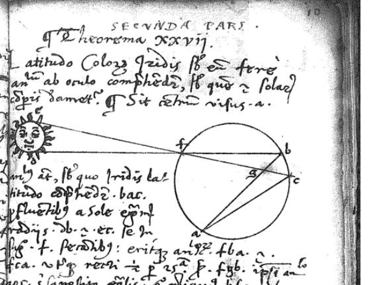

|
Le mie ricerche in Storia delle matematiche |
 |
|
Ricercatore a tempo determinato (tipo B) |
|
Aree di ricerca
Principali pubblicazioni (vedi curriculum vitae per l’elenco completo)
Pubblicazioni (in ordine cronologico)
Contatti
Tel: 06 7259 4628 (ufficio, stanza 0122, mappa)